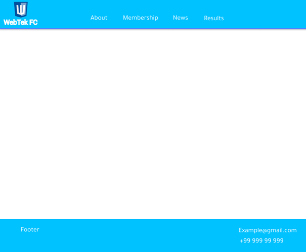

Header
P2 project requirements
Marcin, Anojan, Herman, Vebjørn, Camilla
IT2805 07.10.2021
Administrative Details
Fictional client: Webtek FC
Website name: Webtek FC
Contactpersons: Marcin Zemlo, Anojan Skanthmany, Herman Sætre, Camilla Vattøy, Vebjørn Georg Herland Dahl
Purpose, goals, and audience
Website’s purpose is to spread informasjon about Webtek and provide users with results and schedule of upcoming matches and events. You are going to have a chance to become a member, membership is going to give you different benefits. The Website's main audience will be parents, supporters, players and potential members.
Navigation Structure
6 html filer
- Main page
- About
- News
- Join the club/membership
- Upcoming matches/ Calender
- Results
Css filer
Main css fil for css
Page Layout and Appearance
When coming up with the main design, we tried to keep the page clean and simple. We do not want the user to be bombarded with pictures, links, and multiple paragraphs of text. The navigation bar has enough information to give the user the necessary tools to figure out information about Webtek FC. The target audience will instantly know what link to click to figure out the information they need. The layout includes WebTek FC`s logo, which is easily identifiable in the top left corner. The about page will be helpful for users that want to learn more about WebTek FC, the membership page for users that are looking to join, the news page for anyone that wants to be updated, and the results page for supporters and members. We reckon this universal design will be easy to use and meet the requirements of our users.
This is the specific styling
Font: Verdana (sans-serif) for main title (20pt), content text (18pt) and footer (18pt)
Color scheme:
- Black text for content
- White text for navbar
- White background for content
- Navbar: blue. (#00C2FF)
- Navbar a:hover color (#4cd4ff)
Navbar position and its appearance:
Navbar will be at the top of the page. When hovering over a tab a background color (#4cd4ff) will appear behind the text.
Links
The logo will be a clickable link that puts the user back to the main page. Clicking on about will bring the user to the about page.
Logo
Logo will be in the upper left corner. Under the logo, there will be the text “Webtek FC”. Clicking the logo or the text under the logo will bring the user back to the main page.
Banner
Banner will be WebTek FC written in Verdana
Body width
900px
Footer
The footer will be the same color as the navbar and include a phone number and email.
Content
Minimum Requirements
- Night mode
- Spinning wheel/Button to win waterbottle/t-shirt/shoes/ball
- Slideshow of images